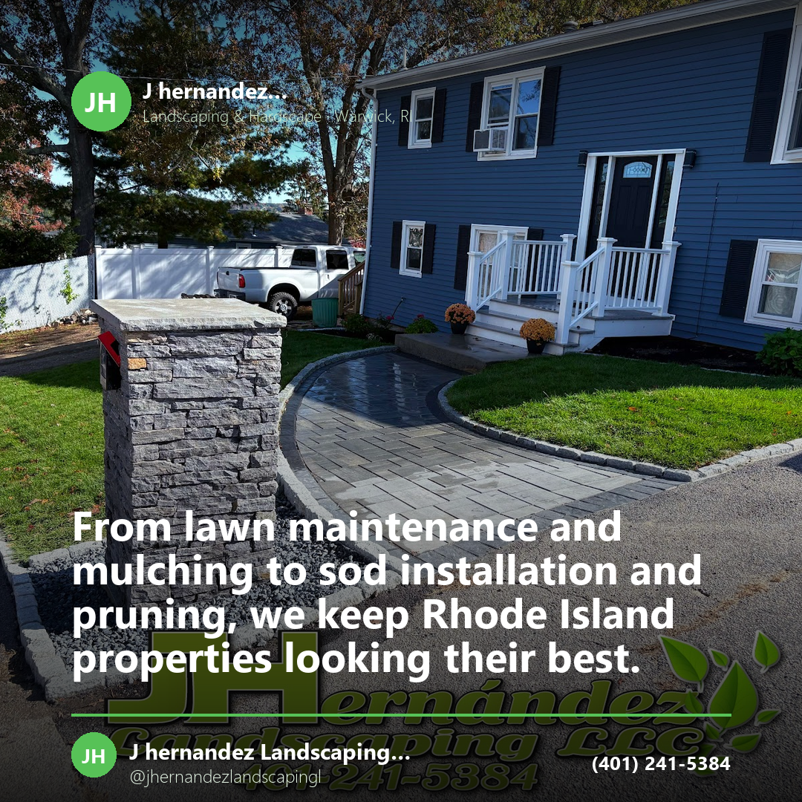
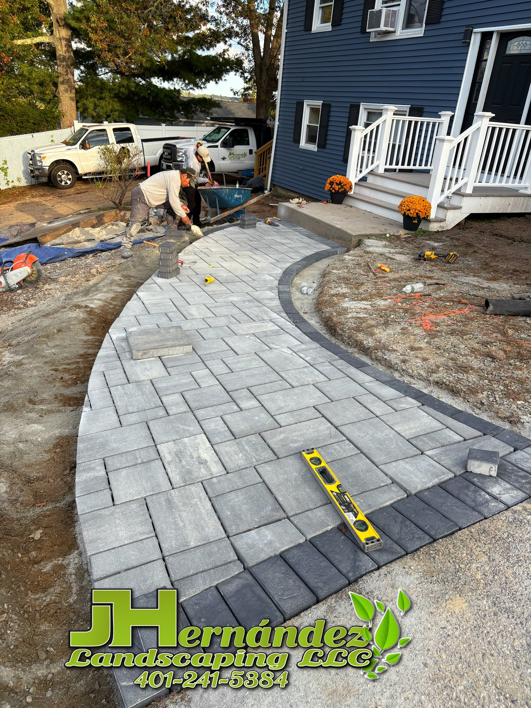
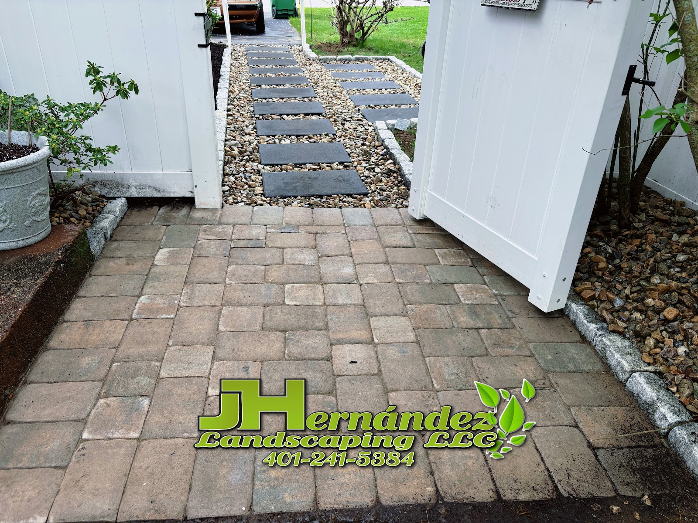

Services · Instagram
From lawn maintenance and mulching to sod installation and pruning, we keep Rhode Island properties looking their best. One call covers the whole yard, start to finish.
J Hernandez Landscaping is an owner-operated crew on Warwick Avenue. We keep the green side of a property looking after itself — and we build the hard parts that hold it all together.
A walkway is dug out, based, graded and pitched before a single paver is laid, and every one of those steps is invisible in the finished photograph. It is also the difference between a path that is still flat years later and one that heaves at the seams. Every photograph on this page is our own work.

The regular work that keeps a property from getting away from you — and the two jobs a year that nobody wants to do on a ladder or in the snow.
Keeping the lawn cut, edged, and looking tended through the growing season.
Fresh mulch in the beds, and new sod where the lawn has given up entirely.
Shrubs and plantings cut back so they keep their shape instead of swallowing the front of the house.
Gutters cleared out before the water finds somewhere else to go.
The same crew that mows in July is the one clearing your driveway in January.

Mowing and mulch, or a walkway that needs to come out and be built again properly — either way it starts with a look at the yard.
(401) 241-5384Content